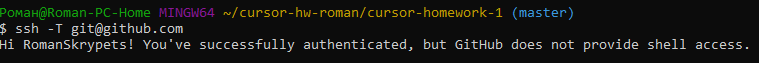

| Команда | Визначення |
|---|---|
| git config --global user.name "[Ім'я]" | Встановлює ім'я, яке відображатиметься в полі автора під час виконання вами коммітів |
| git config --global user.email "[Mail]" | Встановлює адресу електронної пошти, яка відображатиметься в інформації про виконуваних вами коммітатах |
| git init [назва проекту] | Ініціює пустий репозиторій в поточній директорії. Так само можна вказати будь-який шлях |
| git status | Перечисляє всі нові або змінені файли, які потребують фіксації |
| git add [Файл] | Додання файлів в комміт(. та * - щоб добавити всі файли в дректорії).Щоб додати один файл необхідно вказати його ім'я та розширення |
| git commit -m "[Повідомлення з описом]" | Фіксирує вироблені зміни та зберігає їх в історії версії. |
| git log | Історія коммітов для поточної гілки |
| git checkout [ім'я гілки] | Перемикається на обрану гілку і оновлює робочу директорію до її стану |
| git branch [ім'я гілки] | Створює нову гілку |
| git push [віддалений репозиторій] [гілка] | Пушим або відправляємо в репозиторій наші зміпки проекту. origin – назва віддаленого репозиторію (зазвичай вибирають origin, але в теорії може бути будь-яке слово) master – назва гілки в яку додаємо зміни (master – головна гілка у репозиторії, може бути будь-якою) |
| git pull | Завантажує історію з віддаленого сховища та об'єднує її з локальної. pull = fetch + merge |
| git merge[віддалений репозиторій]/[гілка] | Вносить зміни з гілки віддаленого сховища в поточну гілку локального сховища |
| git clone [url-адрес] | Скачивает репозиторий вместе со всей его историей изменений |
| .gitignore | Git буде ігнорувати файли і директорії, перераховані у файлі .gitignore |
| Advanced | |
| git revert | Скасувати деякі існуючі комміти |
| git reset | Скинути поточний HEAD до заданого стану |
| git rebase | Спосіб об'єднати зміни, зроблені в одній гілці, з іншого гілкою. |
| git cherry-pick | Використовується для того щоб взяти зміни, внесені будь-яким коммітов, і спробувати застосувати їх заново у вигляді нового коммітов нагорі поточної гілки. |
| git stash | Команда git stash дозволяє на час архівувати (або «відкласти») зміни, зроблені в робочій копії, щоб ви могли застосувати їх пізніше. |
| SSH |  |